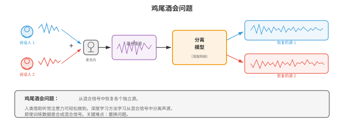
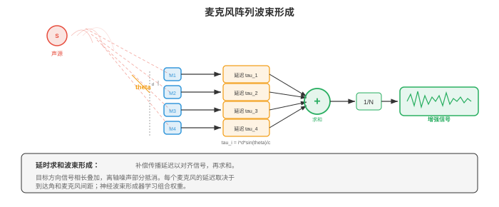
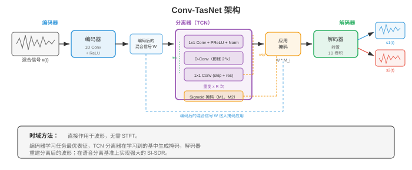
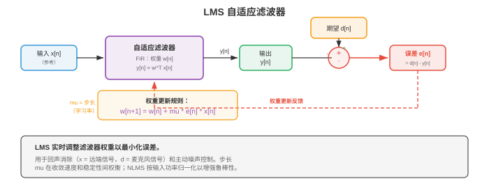

源分离与降噪¶
源分离和降噪从混合音频中恢复各个独立信号，是“鸡尾酒会问题”的计算求解。本节涵盖 ICA、NMF、时频掩码、波束形成、深度学习分离网络（Conv-TasNet、SepFormer）、语音增强和自适应主动降噪。
- 想象你站在拥挤的鸡尾酒会上。几十个人同时交谈，音乐在播放，酒杯在碰撞，但你仍可聚焦于一段对话并清楚跟上。人类听觉系统几乎不费力就能解决、而机器却极难处理的这种卓越能力，称为鸡尾酒会问题（cocktail party problem；Cherry，1953）。本节讨论试图解决它的算法：分离混合音频源、消除不需要的噪声，以及在恶劣条件下增强语音。
大白话
人能在嘈杂人群里听清朋友说话，机器却很难把混在一起的所有声音拆开；源分离和降噪就是在解决这个问题。
- 第 01 节的信号处理基础（STFT、频谱图、滤波器组）支撑这里的每一种方法。第 02 章的矩阵分解技术（NMF、ICA、SVD）提供经典工具箱；第 06 章的深度学习架构（CNN、RNN、注意力）和第 04/05 章的概率论则支撑现代方法。
大白话
这类问题既要用信号处理把声音展开来看，也要用矩阵分解或神经网络根据规律把各部分拆开。

- 问题建模：一个或多个麦克风观测到混合信号 \(x(t)\)。在最简单的情形下，混合信号是 \(C\) 个源信号之和：
大白话
麦克风收到的是所有来源叠在一起的结果，任务是从这个总和里尽量还原每个单独声音。
大白话
在每个时刻，录到的声音等于所有目标声源相加，再加上背景噪声。
- 其中，\(s_c(t)\) 是第 \(c\) 个源信号，\(n(t)\) 是背景噪声。目标是恢复各个 \(s_c(t)\)，即从 \(x(t)\) 中进行估计。单麦克风情形严重欠定：一个方程、\(C\) 个未知量。必须引入额外假设（统计独立性、频谱结构、学习得到的先验）才能使问题可解。
大白话
只有一支麦克风却有多个声音，光靠加法式子无法唯一反推；必须额外相信声音彼此独立、频谱不同或模型学过类似情况。
- 在频域中（经由第 01 节的 STFT），混合信号变为：
大白话
把声音转换到时频图上后，可以在每个时间和频率的小格里单独判断哪种声音更占优势。
大白话
这和时域相加是同一件事，只是现在每个频率位置也被明确列出来了。
- 许多分离方法在时频域中工作：为每个源估计一个掩码 \(M_c(t, f) \in [0, 1]\)，再按 \(\hat{S}_c(t, f) = M_c(t, f) \cdot X(t, f)\) 恢复该源。理想二值掩码（ideal binary mask, IBM）令 \(M_c(t, f) = 1\)，若源 \(c\) 主导该时频 bin；否则为 0。理想比率掩码（ideal ratio mask, IRM）则是软版本：
大白话
掩码像给时频图每个小格分配比例：某个格子更像人声，就给人声多留一些，给其他来源少留一些。
大白话
IRM 用目标源能量占所有源总能量的比例当保留比例，因此比简单的留或删更平滑。
- 当麦克风数量等于或多于源数量时，独立成分分析（Independent Component Analysis, ICA）是经典方法。ICA（第 02 章）寻找线性解混矩阵 \(W\)，使 \(\hat{s} = Wx\)，并让恢复出的源 \(\hat{s}\) 尽可能统计独立。关键假设是源信号非高斯且独立，这通常对语音和音乐成立。
大白话
ICA 相信不同人的声音在统计上彼此独立，用一个矩阵把混音反向旋开；它需要麦克风数量至少不比声源少。
- 对于多麦克风瞬时混合模型 \(x = As\)（\(A\) 是混合矩阵），ICA 通过最大化输出的非高斯性（FastICA 使用负熵）或最小化互信息来恢复 \(W \approx A^{-1}\)。ICA 在受控环境中表现良好，但当混合包含卷积（房间混响）、源数量超过麦克风数量，或独立性假设不成立时会失效。
大白话
理想情况下 \(W\) 是混合矩阵 \(A\) 的近似逆；现实房间有回声、声源更多或声音相关时，这个理想前提就会破裂。
- 非负矩阵分解（Non-negative Matrix Factorisation, NMF）将幅度频谱图 \(V \in \mathbb{R}_+^{F \times T}\) 分解为两个非负矩阵的乘积（第 02 章）：
大白话
NMF 把一张频谱图拆成“常见声音形状的字典”和“每种形状何时出现、出现多强”的组合。
大白话
\(W\) 存放频谱模板，\(H\) 存放模板随时间的使用强度，相乘后近似还原原频谱图。
- 其中，\(W \in \mathbb{R}_+^{F \times K}\) 是由 \(K\) 个频谱基向量组成的字典，\(H \in \mathbb{R}_+^{K \times T}\) 包含随时间变化的激活系数。非负约束有物理依据：幅度非负，声音以加法组合。
大白话
频谱幅度不会是负数，声音也是叠加出来的，所以用全非负模板和非负强度更符合物理直觉。
- 用于源分离时，NMF 为每个源学习独立字典：\(W_{\text{speech}}\) 捕获语音的频谱模式（共振峰结构），\(W_{\text{noise}}\) 捕获噪声模式。混合被分解为 \(V \approx W_{\text{speech}} H_{\text{speech}} + W_{\text{noise}} H_{\text{noise}}\)，再通过掩码恢复各源。NMF 使用乘法更新最小化，以 Frobenius 范数或 KL 散度作代价函数：
大白话
分别学人声模板和噪声模板后，系统就能估计每个时刻哪一部分来自人声、哪一部分来自噪声。
大白话
两种代价函数都衡量分解后重建得离原频谱图有多远，只是惩罚误差的方式不同。
- 波束形成利用麦克风阵列的空间信息。一个源信号因空间位置不同而以不同延迟抵达各个麦克风时，这些延迟可用来增强一个方向的信号并抑制其他方向。
大白话
多支麦克风会在略不同时间听到同一声音；利用这些时间差，系统能把“耳朵”对准目标方向，压低其他方向。

- 延时求和波束形成是最简单的方法。若目标源相对阵列的角度为 \(\theta\)，麦克风 \(m\) 的时间延迟是 \(\tau_m(\theta) = d_m \sin \theta / c\)，其中 \(d_m\) 是麦克风位置，\(c\) 是声速。波束形成器输出会对齐并求和各麦克风信号：
大白话
先按目标方向预计的到达时间把每路录音对齐，再相加，目标声会叠得更响。
大白话
公式对每支麦克风先平移对应延迟，再取平均，效果像把目标声的波峰对齐。
- 来自目标方向的信号相干叠加，来自其他方向的信号非相干叠加，从而实现空间滤波。阵列几何结构决定空间分辨率：阵列越大，波束越窄。
大白话
对齐后的目标声会相互加强，没对齐的干扰声互相抵消一些；麦克风阵列越大，能分辨的方向越细。
- 最小方差无失真响应（Minimum Variance Distortionless Response, MVDR）波束形成通过优化权重，在无失真通过目标方向的同时最小化总输出功率：
大白话
MVDR 要求目标方向的声音原样通过，同时把输出里其他方向和噪声的总能量压到最小。
大白话
第一行是在找最小噪声输出，第二行是硬约束：不能为了降噪把目标声音也压没。
- 其中，\(\Phi_{nn}\) 是噪声空间协方差矩阵，\(\mathbf{d}(\theta)\) 是方向 \(\theta\) 的导向向量。闭式解为：
大白话
噪声协方差描述不同麦克风上的噪声如何一起变化，导向向量描述目标方向应有的到达模式。
大白话
这个解根据噪声形状自动给各麦克风分配权重，同时用分母校准，保证目标方向不会被缩小。
- MVDR 通过估计的噪声协方差适应噪声环境，比延时求和提供更好的干扰抑制，广泛用于助听器、智能音箱和远程会议系统。
大白话
它比简单对齐求和更懂得躲开当前噪声方向，所以常见于需要定向听人的设备。
- 用于源分离的深度学习显著提升了性能，尤其是在经典方法表现困难的单麦克风情形。通用范式是：编码混合信号，用神经网络估计掩码或源表征，再解码以恢复各个源。
大白话
神经方法先把混音压成更容易拆分的表示，再由网络按训练经验分出各声源，最后还原声音，单麦克风也能工作。
- 深度聚类（deep clustering；Hershey 等，2016）将每个时频 bin 嵌入高维空间：属于同一源的 bin 彼此接近，不同源的 bin 相距很远。双向 LSTM（第 06 章）将每个 T-F bin \((t, f)\) 映射为嵌入 \(v_{t,f} \in \mathbb{R}^D\)。训练目标为：
大白话
深度聚类不直接给每个格子贴“人声/噪声”标签，而是先让同一来源的格子在向量空间里自然聚在一起。
大白话
这个损失要求模型算出的“两个格子像不像”与真实的“它们是否同源”尽可能一致。
- 其中，\(V\) 是嵌入矩阵，\(Y\) 是源分配的独热矩阵。乘积 \(VV^T\) 是亲和矩阵（两个 bin 的嵌入有多相似），\(YY^T\) 是理想亲和矩阵（同一源为 1，否则为 0）。推理时，对嵌入进行 K-means 聚类即可产生二值掩码。
大白话
训练好后只要把所有时频格的嵌入按相似度分组，每一组就对应一个声源掩码。
- Conv-TasNet（Luo 和 Mesgarani，2019）完全在时域中运行，绕过了 STFT。它有三个组成部分：
大白话
Conv-TasNet 不先画频谱图，而是直接从原始波形中学出适合分离的表示、掩码和重建方式。

- 编码器：一维卷积将混合波形的短片段映射为潜在表征。对混合信号 \(x \in \mathbb{R}^T\)，编码器输出为 \(w = \text{ReLU}(U \ast x) \in \mathbb{R}^{N \times L}\)，其中 \(U\) 是可学习基（类似 STFT 基，但从数据中学习），\(N\) 是基函数数量，\(L\) 是片段数量。编码器卷积核大小和步幅（通常为 2 ms 和 1 ms）决定时间分辨率。
大白话
编码器把波形切成很短片段，用自己学出的“声音积木”表示它们，而不是固定使用 STFT 的正弦基。
- 分离器：时序卷积网络（Temporal Convolutional Network, TCN）处理编码后的混合信号，并输出 \(C\) 个掩码。TCN 按块堆叠一维空洞深度可分离卷积（第 08 章的高效卷积），其膨胀因子以指数方式增长 \(1, 2, 4, \ldots, 2^{B-1}\)，重复 \(R\) 次。在保持计算高效的同时，这提供了很大的感受野。
大白话
分离器在潜在表示上用越来越稀疏的卷积看很长历史，为每个目标声源算出该保留多少。
- 解码器：转置一维卷积（使用学习到的基 \(V\)）将每个掩码后的表征转回时域：\(\hat{s}_c = V^T (M_c \odot w)\)。
大白话
解码器把每个源筛选后的潜在积木重新拼回真正可以播放的波形。
- Conv-TasNet 显著优于基于频谱图的方法，因为学习到的编码器-解码器基可捕获被 STFT 幅度丢弃的信息，尤其是相位。
大白话
自己学习的表示不必丢掉 STFT 幅度法常忽略的相位信息，因此分离质量通常更好。
- 双路径 RNN（Dual-Path RNN, DPRNN；Luo 等，2020）解决分离中的长序列建模问题。DPRNN 不使用单个 RNN 或 TCN 处理整个编码序列，而是将序列划分为重叠块，沿两条路径应用 RNN：块内路径（建模每块内的局部模式）和块间路径（建模跨块的全局模式）。这会将每个维度上的 RNN 序列长度从 \(L\) 降至 \(\sqrt{L}\)：
大白话
DPRNN 把超长序列切成小块：先在块内看细节，再跨块看全局，避免一个 RNN 一次背完整段录音。
大白话
同一组 RNN 分别沿块内位置和块编号两个方向运行，组合局部连续性与远距离上下文。
- 其中，\(k\) 索引块，\(n\) 索引块内位置。块内 LSTM 沿 \(n\) 处理（固定 \(k\)）；块间 LSTM 沿 \(k\) 处理（固定 \(n\)）。
大白话
固定一块时看块里的时间变化，固定块内位置时看所有块之间的变化，两条路径各补一部分信息。
- SepFormer（Subakan 等，2021）在双路径框架中用 Transformer（第 07 章）取代 RNN。块内 Transformer 以自注意力捕获局部依赖，块间 Transformer 捕获全局依赖。多头注意力无需面对梯度消失问题（第 06 章）即可建模长程依赖，这使 SepFormer 对长录音特别有效。SepFormer 在 WSJ0-2mix 基准上取得了先进结果。
大白话
SepFormer 保留双路径切块思路，但用注意力代替 RNN，更容易把相隔很远却有关联的声音联系起来。
- 置换不变训练（Permutation Invariant Training, PIT）解决监督源分离的基本问题：标签分配歧义。若网络有两个输出（对应两个说话人），哪个输出应该对应哪个说话人？不存在自然顺序。PIT 对所有可能的分配计算损失并取最小值：
大白话
分离器的第一个输出并不天然就是第一个人；PIT 只关心两个输出是否分别对上两条真实声音，不强行规定顺序。
大白话
它会枚举输出和真值的配对方式，选总误差最小的那种来训练。
- 其中，\(\mathcal{P}\) 是 \(\{1, \ldots, C\}\) 的所有置换集合，\(\ell\) 是每源损失（通常为尺度不变信号失真比，SI-SDR）。\(C = 2\) 个源时只有 2 种置换；\(C = 3\) 时有 6 种。对更大的 \(C\)，可用匈牙利算法高效计算。
大白话
声源数一多，所有配对组合会快速增长，所以实际系统会用算法高效找到最优匹配。
- 尺度不变信号失真比（Scale-Invariant Signal-to-Distortion Ratio, SI-SDR）是源分离的标准评估指标：
大白话
SI-SDR 衡量分离出的声音里目标部分有多强、残留错误有多少，同时不因整体音量变大或变小而误判。
大白话
先把估计声音投影到真实声音方向得到目标部分，剩下的当作误差；目标能量和误差能量的比值越大越好。
- 其中，\(\hat{s}\) 是估计源，\(s\) 是真实值。SI-SDR 对估计结果的整体尺度不变；这是理想的，因为绝对音量不如分离质量重要。更高的 SI-SDR（单位 dB）更好。最先进系统在 WSJ0-2mix 上实现约 20-22 dB 的 SI-SDR 提升。
大白话
把分离结果整体调响或调轻不该算质量变化，真正重要的是还剩多少串音和伪影。
- 音乐源分离将一段音乐录音分成不同音轨：人声、鼓、贝斯和其他乐器。这支持卡拉 OK（移除人声）、混音（调整乐器音量）和转录（一次分析一种乐器）等应用。
大白话
把混好的歌拆成若干轨后，就能单独静音人声、调鼓声或只分析某种乐器。
- Open-Unmix（Stoter 等，2019）是一个参考基线：它使用三层双向 LSTM，在幅度 STFT 域中为每个源预测软掩码，并用专用模型独立处理每个源。Open-Unmix 简单而有效，在 MUSDB18 上建立了可复现基准。
大白话
Open-Unmix 是清晰可靠的基线方案：在频谱图上为每个目标源预测保留比例，方便研究者公平比较。
- Demucs（Defossez 等，2019；2021 年更新为 Hybrid Demucs）使用直接作用于波形的 U-Net 架构（第 08 章）。编码器通过带步幅卷积压缩混合信号，解码器通过带跳跃连接的转置卷积将其展开，每个源都有自己的解码器头。Hybrid Demucs结合时域和频域处理：编码器并行设置时域分支和 STFT 分支，在解码器之前融合特征，从而同时捕获精细时间细节和频谱结构。
大白话
Demucs 像 U-Net 分割图像那样分割声音：压缩后提取特征，再通过跳跃连接重建各音轨；混合版同时参考波形细节和频谱结构。
- Demucs 在 MUSDB18 上获得先进的分离质量，尤其擅长人声分离。它的 U-Net 架构让人联想到第 08 章的图像分割架构，可将分离问题视为一种“音频分割”。
大白话
可以把频谱或波形看成需要按来源涂色的对象，Demucs 正是在做声音版的像素分割。
- 主动降噪（active noise cancellation, ANC）通过生成与噪声发生相消干涉的反噪声信号，降低不需要的声音。想想降噪耳机：麦克风拾取环境噪声，ANC 系统生成其反相版本，合成信号（噪声 + 反噪声）理想情况下会相消为静音。
大白话
主动降噪不是隔住噪声，而是播放一段波形相反的声音，让两者在耳边尽量互相抵消。
- 物理原理很简单：若噪声为 \(n(t)\)，在同一空间点生成 \(-n(t)\) 就会得到静音：\(n(t) + (-n(t)) = 0\)。难点在于反噪声必须在时间、幅度和相位上精确对齐，哪怕很小的误差也会产生残余噪声或伪影。
大白话
原理像正数加负数归零，但现实中声音会移动和变化，反噪声只要晚一点或大小不对，就无法完全抵消。
- 前馈 ANC使用参考麦克风，在噪声抵达听者前将其拾取。系统因此有时间处理噪声并生成反噪声。参考信号经过自适应滤波器，其输出从误差麦克风（听者附近）处的噪声中减去。这对可预测的宽带噪声（发动机嗡鸣、风扇噪声）效果良好。
大白话
前馈 ANC 有一支“前哨麦克风”提前听到噪声，因此能赶在噪声到耳边前准备好反噪声。
- 反馈 ANC只使用听者耳边的误差麦克风。系统从残差信号（听者实际听到的声音）估计噪声，并调整反噪声。反馈 ANC 更简单（不需要参考麦克风），但带宽有限且可能不稳定。
大白话
反馈 ANC 只根据耳边剩下的声音事后调整，硬件更简单，但没有提前量，能稳定处理的范围更受限。
- 自适应滤波是 ANC 背后的数学引擎。滤波器系数必须持续适应变化的噪声环境，最常见的算法是最小均方（Least Mean Squares, LMS）滤波器。
大白话
噪声环境一直在变，反噪声滤波器的参数也必须边听边调整；LMS 是最常见的在线调参方法。

- LMS 算法：系数为 \(\mathbf{w} = [w_0, w_1, \ldots, w_{L-1}]^T\) 的 FIR 滤波器处理参考信号 \(\mathbf{x}(n) = [x(n), x(n-1), \ldots, x(n-L+1)]^T\)。输出为 \(y(n) = \mathbf{w}^T \mathbf{x}(n)\)，误差为 \(e(n) = d(n) - y(n)\)（其中 \(d(n)\) 是期望/主信号），权重更新为：
大白话
LMS 用最近一小段参考噪声合成反噪声，比较实际残差后，立刻按误差方向微调每个滤波器系数。
大白话
当前误差越大、某个输入分量越明显，对应权重改得越多；\(\mu\) 控制每一步改多快。
- 其中，\(\mu\) 是步长（学习率）。这是均方误差 \(E[e^2(n)]\) 上的一步随机梯度下降：它用瞬时梯度估计 \(-2 e(n) \mathbf{x}(n)\) 代替真实梯度（第 03 章的梯度下降和第 06 章的 SGD）。
大白话
LMS 本质上就是实时版的梯度下降，不等收集完全部数据，只用当前这一刻的误差近似指引更新方向。
- 步长 \(\mu\) 控制收敛速度与稳态误差之间的权衡。过大会使滤波器振荡或发散；过小则适应缓慢。稳定条件为 \(0 < \mu < 2 / (\lambda_{\max})\)，其中 \(\lambda_{\max}\) 是输入自相关矩阵 \(R = E[\mathbf{x}\mathbf{x}^T]\) 的最大特征值。
大白话
步长太大像每次方向盘打得过猛，会来回摆甚至失控；太小则跟不上环境变化，稳定范围由输入信号强度决定。
- 归一化 LMS（Normalised LMS, NLMS）按输入功率归一化步长，使收敛不受信号幅度影响：
大白话
NLMS 会根据当前输入有多响自动缩放更新步长，避免同一个 \(\mu\) 遇到大音量时改得过猛。
大白话
分母用输入能量做归一化：输入越强，每次更新越小；\(\epsilon\) 防止输入接近零时除零。
- 其中，\(\epsilon\) 是防止除零的小正则化常数。NLMS 比 LMS 收敛更可靠，因为有效步长会适应输入功率。
大白话
所以 NLMS 对安静和很响的场景都更稳，不用反复手调学习率。
- 递归最小二乘（Recursive Least Squares, RLS）是收敛更快的替代方案，它最小化加权最小二乘代价 \(\sum_{k=1}^{n} \lambda^{n-k} e^2(k)\)，其中 \(\lambda \in (0, 1]\) 是遗忘因子。RLS 维护逆自相关矩阵的估计并递归更新，以每个采样点 \(O(L^2)\) 的计算代价获得最优收敛（LMS 为 \(O(L)\)）。
大白话
RLS 花更多计算记住历史统计量，因此适应更快；遗忘因子让旧数据逐渐失去影响，适合环境变化。
- 降噪和语音增强旨在提升带噪录音中的语音质量与可懂度。不同于分离不同源的源分离，语音增强专门针对“语音加噪声”情形，从带噪观测中恢复干净语音。
大白话
源分离要拆开多个可能平等重要的声音，语音增强则把人声当目标，重点是压掉背景噪声。
- 频谱减法是最简单的方法。在仅含噪声的帧中（由第 03 节的 VAD 检测），估计噪声频谱 \(|\hat{N}(f)|^2\)，再从每一帧中减去它：
大白话
先在没人说话时记住噪声长什么样，再从后续频谱里直接扣掉这份噪声估计。
大白话
公式扣除估计噪声后还设了下限，防止某些频率被扣成负数或完全挖空。
- 其中，\(\alpha\) 是过减因子（通常为 1-4；激进减法去除更多噪声，但也引入更多伪影），\(\beta\) 是频谱下限，用于防止负值并减少“音乐噪声”伪影（听起来像随机音符的孤立音调残留）。
大白话
\(\alpha\) 大一点能压掉更多噪声，却可能伤到人声；\(\beta\) 留一点底噪，是为了避免出现刺耳的随机啸叫。
- 维纳滤波提供干净语音频谱的最小均方误差估计：
大白话
维纳滤波不做粗暴相减，而是按每个时频格的信噪比平滑决定应该保留多少。
大白话
人声占比高的格子，增益 \(G\) 接近 1；噪声占比高的格子，\(G\) 接近 0。
- 维纳增益 \(G(t, f) = \text{SNR}(t, f) / (1 + \text{SNR}(t, f))\) 从 0（纯噪声）到 1（纯语音），作为软掩码。难点在于估计语音和噪声功率谱。先验 SNR \(\xi(t, f) = |S(t,f)|^2 / |N(t,f)|^2\) 使用“决策导向”方法估计：将当前帧的估计与上一帧经过维纳滤波的输出进行平滑组合。
大白话
真正难的不是套公式，而是实时猜出当前人声和噪声各有多强；决策导向方法用上一帧结果让估计更平稳。
- 神经语音增强使用深度学习估计掩码（如维纳增益）或直接估计干净频谱图。架构从简单前馈网络到 U-Net（第 08 章）、CRN（Convolutional Recurrent Network，卷积循环网络）和 Transformer。
大白话
神经增强模型从大量带噪和干净语音配对中学会怎样修复，不必只依赖固定的频谱规则。
- DCCRN（Deep Complex Convolutional Recurrent Network）作用于复数 STFT（幅度和相位），使用可自然处理实部与虚部的复值卷积，避免了仅幅度方法面临的相位估计问题。
大白话
DCCRN 连相位也一起处理，避免先只修幅度、最后却不知道如何把相位补回来的问题。
- FullSubNet采用双路径架构，包括全频带模型（捕获全局频谱模式）和子频带模型（捕获局部谐波细节）。全频带模型处理整个频谱，子频带模型处理以各频率 bin 为中心的窄频带；二者的输出合并为最终掩码估计。
大白话
FullSubNet 一条路线看整张频谱掌握全局，另一条路线盯住每个频段附近的细节，最后合并两种判断。
- Microsoft 的 DNS（Deep Noise Suppression）挑战赛每年评测语音增强系统。获胜方案通常采用包含多样噪声类型的大规模训练、数据增强（在不同 SNR 下加入噪声、混响、编解码伪影）和具备实时能力的架构。
大白话
降噪模型要在各种噪声、回声和编码损坏下都稳，关键通常是覆盖足够多真实变化的训练数据和能实时运行的结构。
- 回声消除移除双向通信中的声学回声。通话时，远端说话人的声音经你的扬声器播放，在房间中反射后被你的麦克风拾取，形成远端说话人听到的回声。声学回声消除（Acoustic Echo Cancellation, AEC）建模从扬声器到麦克风的声学路径，并减去预测的回声。
大白话
通话回声是对方的声音从你的扬声器放出后又被你的麦克风录回去；AEC 预测这条回传声音并把它减掉。
- 声学路径以远端信号为输入，建模为自适应 FIR 滤波器（使用 LMS 或 NLMS）。滤波器描述包含直达声、早期反射和后期混响的房间脉冲响应。房间脉冲响应可长达数百毫秒，因此需要具有数千个抽头的滤波器。
大白话
房间里的直达声和多次反射都会形成回声路径，滤波器得足够长才能模拟这串延迟和衰减。
- 双讲检测对 AEC 至关重要：近端和远端说话人同时讲话时，自适应滤波器必须冻结（停止更新），以避免消除近端说话人的声音。双讲检测器比较误差信号能量和远端信号能量；若误差能量突然增加而无法由远端信号解释，说明存在近端语音。
大白话
两边同时说话时不能继续把所有麦克风声音当回声学，否则本地人的声音也会被错误消掉，所以滤波器要暂停学习。
- 远端信号 \(x(n)\) 与麦克风信号 \(d(n)\) 的归一化互相关可提供双讲指示：
大白话
系统比较远端播放声和麦克风声是否仍像同一段信号；不再相像时，可能有人在本地同时说话。
大白话
归一化后这个相关度不受整体音量影响，主要反映两段信号的形状是否同步。
- 单讲时（仅远端），\(\xi\) 很高，因为 \(d\) 大多是 \(x\) 的回声。双讲时，\(\xi\) 会下降，因为近端语音与 \(x\) 不相关。
大白话
只有远端说话时，麦克风里主要是它的回声，相关度高；本地人一开口，混进无关声音，相关度就会下降。
- 现代 AEC 系统将自适应滤波与神经网络结合：自适应滤波器给出初始回声估计，神经网络（类似上述语音增强模型）清理残余回声，并处理线性滤波器无法捕获的非线性（扬声器失真）。
大白话
传统滤波先去掉大部分可预测回声，神经网络再处理残余和扬声器失真等更复杂的部分。
- 分离与增强的评价指标：
大白话
分离和降噪不能只听主观感觉，需要分别量化目标声是否干净、语音质量、可懂度和残留失真。
-
SI-SDR（如上定义）：源分离标准指标。
大白话
SI-SDR 主要看拆出的目标声相对残余错误有多干净。
-
SDR（Signal-to-Distortion Ratio，信号失真比）：来自 BSS Eval，测量包括伪影和干扰在内的整体分离质量。
大白话
SDR 更总体地统计干扰和伪影造成的失真。
-
PESQ（Perceptual Evaluation of Speech Quality，语音质量感知评价）：预测主观质量得分的 ITU 标准，范围为 -0.5 至 4.5。
大白话
PESQ 尝试用算法预测人耳会给语音质量打多少分。
-
STOI（Short-Time Objective Intelligibility，短时客观可懂度）：预测语音可懂度，范围为 0 至 1。
大白话
STOI 关注的是能否听清内容，1 表示预计可懂度更高。
-
DNSMOS：Microsoft 的深度噪声抑制 MOS 预测器，是一个无需干净参考音频即可预测人类 MOS 得分的神经网络。
大白话
DNSMOS 不要求有一份干净原音做对照，直接从处理后的语音预测人类可能给出的自然度评分。
编程任务（使用 CoLab 或笔记本）¶
- 任务 1：用于源分离的独立成分分析。 实现 FastICA 分离两个混合音频源，展示确定情形（源数与麦克风数相等）的经典鸡尾酒会问题解法。
import jax
import jax.numpy as jnp
import jax.random as jr
import matplotlib.pyplot as plt
# Generate two source signals
sr = 8000
duration = 1.0
t = jnp.linspace(0, duration, int(sr * duration))
# Source 1: sinusoidal (like a tone)
s1 = jnp.sin(2 * jnp.pi * 440 * t) + 0.3 * jnp.sin(2 * jnp.pi * 880 * t)
# Source 2: sawtooth-like (rich harmonics)
s2 = 2 * (t * 200 % 1) - 1 # sawtooth at 200 Hz
# Normalise sources
s1 = s1 / jnp.max(jnp.abs(s1))
s2 = s2 / jnp.max(jnp.abs(s2))
sources = jnp.stack([s1, s2]) # (2, T)
# Mixing matrix (unknown to the algorithm)
A = jnp.array([[0.8, 0.4],
[0.3, 0.9]])
mixtures = A @ sources # (2, T)
# FastICA implementation
def whiten(X):
"""Centre and whiten the data."""
X_centered = X - jnp.mean(X, axis=1, keepdims=True)
cov = (X_centered @ X_centered.T) / X_centered.shape[1]
eigvals, eigvecs = jnp.linalg.eigh(cov)
D_inv_sqrt = jnp.diag(1.0 / jnp.sqrt(eigvals + 1e-8))
whitening = D_inv_sqrt @ eigvecs.T
return whitening @ X_centered, whitening
def fastica(X, n_components=2, max_iter=200, tol=1e-6):
"""FastICA using tanh non-linearity (approximation to negentropy)."""
X_white, whitening = whiten(X)
n, T = X_white.shape
key = jr.PRNGKey(42)
W = jr.normal(key, (n_components, n))
# Orthogonalise W
U, _, Vt = jnp.linalg.svd(W, full_matrices=False)
W = U @ Vt
for iteration in range(max_iter):
W_old = W.copy()
# For each component
for i in range(n_components):
w = W[i]
# w^T X_white: (T,)
wx = w @ X_white # (T,)
# g(u) = tanh(u), g'(u) = 1 - tanh^2(u)
g_wx = jnp.tanh(wx)
g_prime_wx = 1 - g_wx ** 2
# Newton update: w_new = E[X * g(w^T X)] - E[g'(w^T X)] * w
w_new = jnp.mean(X_white * g_wx[None, :], axis=1) - \
jnp.mean(g_prime_wx) * w
# Decorrelate from previous components (deflation)
for j in range(i):
w_new = w_new - jnp.dot(w_new, W[j]) * W[j]
w_new = w_new / jnp.linalg.norm(w_new)
W = W.at[i].set(w_new)
# Check convergence
convergence = jnp.min(jnp.abs(jnp.diag(W @ W_old.T)))
if convergence > 1 - tol:
print(f"FastICA converged in {iteration + 1} iterations")
break
# Unmixing matrix
unmixing = W @ whitening
recovered = unmixing @ X
return recovered, unmixing
recovered, W_unmix = fastica(mixtures)
# Fix sign ambiguity (ICA can flip signs)
for i in range(2):
if jnp.corrcoef(recovered[i], sources[i])[0, 1] < -0.5:
recovered = recovered.at[i].set(-recovered[i])
# If sources are swapped, fix permutation
corr_00 = jnp.abs(jnp.corrcoef(recovered[0], sources[0])[0, 1])
corr_01 = jnp.abs(jnp.corrcoef(recovered[0], sources[1])[0, 1])
if corr_01 > corr_00:
recovered = recovered[::-1]
# Normalise for display
recovered = recovered / jnp.max(jnp.abs(recovered), axis=1, keepdims=True)
fig, axes = plt.subplots(3, 2, figsize=(14, 9))
axes[0, 0].plot(t[:1000], s1[:1000], color='#3498db', linewidth=0.8)
axes[0, 0].set_title('Source 1 (Original)')
axes[0, 0].set_ylabel('Amplitude')
axes[0, 1].plot(t[:1000], s2[:1000], color='#e74c3c', linewidth=0.8)
axes[0, 1].set_title('Source 2 (Original)')
axes[1, 0].plot(t[:1000], mixtures[0, :1000], color='#9b59b6', linewidth=0.8)
axes[1, 0].set_title('Mixture 1 (Microphone 1)')
axes[1, 0].set_ylabel('Amplitude')
axes[1, 1].plot(t[:1000], mixtures[1, :1000], color='#9b59b6', linewidth=0.8)
axes[1, 1].set_title('Mixture 2 (Microphone 2)')
axes[2, 0].plot(t[:1000], recovered[0, :1000], color='#27ae60', linewidth=0.8)
axes[2, 0].set_title('Recovered Source 1 (FastICA)')
axes[2, 0].set_ylabel('Amplitude')
axes[2, 0].set_xlabel('Time (s)')
axes[2, 1].plot(t[:1000], recovered[1, :1000], color='#f39c12', linewidth=0.8)
axes[2, 1].set_title('Recovered Source 2 (FastICA)')
axes[2, 1].set_xlabel('Time (s)')
plt.tight_layout()
plt.show()
# Report correlation with originals
for i in range(2):
corr = jnp.corrcoef(recovered[i], sources[i])[0, 1]
print(f"Source {i+1} recovery correlation: {corr:.4f}")
- 任务 2：频谱图上的 NMF 源分离。 使用非负矩阵分解（第 02 章）将频谱图分离为两个成分，展示 NMF 如何为每个源学习频谱字典。
import jax
import jax.numpy as jnp
import jax.random as jr
import matplotlib.pyplot as plt
# Generate two signals with distinct spectral characteristics
sr = 8000
duration = 1.0
t = jnp.linspace(0, duration, int(sr * duration))
# Source 1: low-frequency harmonic (simulating bass)
src1 = (jnp.sin(2 * jnp.pi * 100 * t) +
0.5 * jnp.sin(2 * jnp.pi * 200 * t) +
0.3 * jnp.sin(2 * jnp.pi * 300 * t))
# Source 2: high-frequency harmonic (simulating a flute)
src2 = (jnp.sin(2 * jnp.pi * 800 * t) +
0.4 * jnp.sin(2 * jnp.pi * 1600 * t))
# Time-varying amplitudes (sources active at different times)
env1 = jnp.where(t < 0.5, 1.0, 0.3)
env2 = jnp.where(t > 0.3, 1.0, 0.2)
src1 = src1 * env1
src2 = src2 * env2
mixture = src1 + src2
# Compute magnitude spectrogram (STFT)
n_fft = 512
hop = 128
window = jnp.hanning(n_fft)
def compute_stft(signal, n_fft, hop, window):
n_frames = 1 + (len(signal) - n_fft) // hop
frames = jnp.stack([
signal[i * hop : i * hop + n_fft] * window
for i in range(n_frames)
])
return jnp.fft.rfft(frames, n=n_fft)
S_mix = compute_stft(mixture, n_fft, hop, window)
V = jnp.abs(S_mix).T # (F, T) - frequency x time
phase = jnp.angle(S_mix).T
F, T = V.shape
print(f"Spectrogram shape: {F} freq bins x {T} time frames")
# NMF: V ≈ WH using multiplicative update rules
def nmf(V, K, n_iter=200, key=jr.PRNGKey(0)):
"""Non-negative Matrix Factorisation with Frobenius norm."""
k1, k2 = jr.split(key)
W = jnp.abs(jr.normal(k1, (F, K))) * 0.1 + 0.01 # (F, K)
H = jnp.abs(jr.normal(k2, (K, T))) * 0.1 + 0.01 # (K, T)
costs = []
for i in range(n_iter):
# Multiplicative update for H
WtV = W.T @ V
WtWH = W.T @ W @ H + 1e-8
H = H * (WtV / WtWH)
# Multiplicative update for W
VHt = V @ H.T
WHHt = W @ H @ H.T + 1e-8
W = W * (VHt / WHHt)
cost = jnp.sum((V - W @ H) ** 2)
costs.append(float(cost))
return W, H, costs
# Run NMF with K=2 components
K = 2
W, H, costs = nmf(V, K, n_iter=300)
# Reconstruct each source using soft masks
V_hat = W @ H
mask1 = (W[:, 0:1] @ H[0:1, :]) / (V_hat + 1e-8)
mask2 = (W[:, 1:2] @ H[1:2, :]) / (V_hat + 1e-8)
V_src1 = mask1 * V
V_src2 = mask2 * V
# Visualisation
fig, axes = plt.subplots(3, 2, figsize=(14, 10))
# Mixture spectrogram
axes[0, 0].imshow(jnp.log1p(V), aspect='auto', origin='lower', cmap='magma')
axes[0, 0].set_title('Mixture Spectrogram |X|')
axes[0, 0].set_ylabel('Frequency bin')
# NMF convergence
axes[0, 1].plot(costs, color='#3498db', linewidth=1.5)
axes[0, 1].set_title('NMF Convergence')
axes[0, 1].set_xlabel('Iteration')
axes[0, 1].set_ylabel('Frobenius cost')
axes[0, 1].set_yscale('log')
# Spectral basis vectors W
freq_hz = jnp.arange(F) * sr / n_fft
axes[1, 0].plot(freq_hz, W[:, 0], color='#27ae60', linewidth=1.5,
label='Basis 1 (low freq)')
axes[1, 0].plot(freq_hz, W[:, 1], color='#e74c3c', linewidth=1.5,
label='Basis 2 (high freq)')
axes[1, 0].set_title('Learned Spectral Bases W')
axes[1, 0].set_xlabel('Frequency (Hz)')
axes[1, 0].set_ylabel('Magnitude')
axes[1, 0].legend()
# Temporal activations H
time_s = jnp.arange(T) * hop / sr
axes[1, 1].plot(time_s, H[0], color='#27ae60', linewidth=1.5,
label='Activation 1')
axes[1, 1].plot(time_s, H[1], color='#e74c3c', linewidth=1.5,
label='Activation 2')
axes[1, 1].set_title('Temporal Activations H')
axes[1, 1].set_xlabel('Time (s)')
axes[1, 1].set_ylabel('Activation')
axes[1, 1].legend()
# Separated spectrograms
axes[2, 0].imshow(jnp.log1p(V_src1), aspect='auto', origin='lower', cmap='magma')
axes[2, 0].set_title('Separated Source 1 (low-frequency)')
axes[2, 0].set_ylabel('Frequency bin')
axes[2, 0].set_xlabel('Time frame')
axes[2, 1].imshow(jnp.log1p(V_src2), aspect='auto', origin='lower', cmap='magma')
axes[2, 1].set_title('Separated Source 2 (high-frequency)')
axes[2, 1].set_xlabel('Time frame')
plt.tight_layout()
plt.show()
print(f"Reconstruction error: {jnp.sum((V - W @ H)**2):.2f}")
print(f"NMF learns spectral bases that capture each source's frequency profile.")
- 任务 3：用于降噪的 LMS 自适应滤波器。 实现用于回声/噪声消除的 LMS 和 NLMS 算法，展示收敛行为和步长的影响。
import jax
import jax.numpy as jnp
import jax.random as jr
import matplotlib.pyplot as plt
# Simulate an echo cancellation scenario
# Far-end signal -> room impulse response -> echo at microphone
# Near-end speech is the desired signal we want to preserve
sr = 8000
duration = 2.0
n_samples = int(sr * duration)
key = jr.PRNGKey(42)
keys = jr.split(key, 5)
# Far-end signal (reference): random speech-like signal
far_end = jr.normal(keys[0], (n_samples,)) * 0.5
# Room impulse response (unknown to the algorithm)
rir_length = 64
rir = jnp.zeros(rir_length)
rir = rir.at[0].set(0.8) # direct path
rir = rir.at[5].set(0.3) # early reflection
rir = rir.at[12].set(-0.2) # reflection
rir = rir.at[25].set(0.1) # late reflection
rir = rir.at[40].set(-0.05)
# Echo: convolution of far-end with RIR
echo = jnp.convolve(far_end, rir)[:n_samples]
# Near-end speech (active in a portion of the signal)
near_end = jnp.zeros(n_samples)
start, end = n_samples // 3, 2 * n_samples // 3
near_speech = 0.3 * jnp.sin(
2 * jnp.pi * 300 * jnp.linspace(0, (end - start) / sr, end - start)
)
near_end = near_end.at[start:end].set(near_speech)
# Microphone signal: echo + near-end + noise
noise = jr.normal(keys[1], (n_samples,)) * 0.01
mic_signal = echo + near_end + noise
# LMS adaptive filter
def lms_filter(reference, desired, filter_length, mu):
"""Standard LMS adaptive filter."""
n = len(reference)
w = jnp.zeros(filter_length)
output = jnp.zeros(n)
error = jnp.zeros(n)
w_history = []
for i in range(filter_length, n):
x = reference[i:i-filter_length:-1] # reversed segment
if len(x) < filter_length:
x = jnp.pad(x, (0, filter_length - len(x)))
x = reference[max(0, i-filter_length+1):i+1][::-1]
y = jnp.dot(w, x)
e = desired[i] - y
w = w + mu * e * x
output = output.at[i].set(y)
error = error.at[i].set(e)
if i % 500 == 0:
w_history.append(w.copy())
return output, error, w_history
# NLMS adaptive filter
def nlms_filter(reference, desired, filter_length, mu, eps=1e-6):
"""Normalised LMS adaptive filter."""
n = len(reference)
w = jnp.zeros(filter_length)
output = jnp.zeros(n)
error = jnp.zeros(n)
for i in range(filter_length, n):
x = reference[max(0, i-filter_length+1):i+1][::-1]
y = jnp.dot(w, x)
e = desired[i] - y
norm_factor = jnp.dot(x, x) + eps
w = w + (mu / norm_factor) * e * x
output = output.at[i].set(y)
error = error.at[i].set(e)
return output, error
# Run LMS with different step sizes
filter_len = 64
mu_values = [0.001, 0.01, 0.05]
colors_mu = ['#3498db', '#e74c3c', '#27ae60']
fig, axes = plt.subplots(2, 2, figsize=(14, 10))
# Original signals
t = jnp.arange(n_samples) / sr
axes[0, 0].plot(t, mic_signal, color='#9b59b6', linewidth=0.5, alpha=0.7,
label='Mic (echo + near-end)')
axes[0, 0].plot(t, echo, color='#e74c3c', linewidth=0.5, alpha=0.7,
label='Echo (to cancel)')
axes[0, 0].plot(t, near_end, color='#27ae60', linewidth=0.8,
label='Near-end speech (to preserve)')
axes[0, 0].set_title('Signal Components')
axes[0, 0].set_xlabel('Time (s)')
axes[0, 0].set_ylabel('Amplitude')
axes[0, 0].legend(fontsize=8)
# LMS convergence for different step sizes
for mu, color in zip(mu_values, colors_mu):
_, err, _ = lms_filter(far_end, mic_signal, filter_len, mu)
# Smoothed squared error
sq_err = err ** 2
window_size = 200
smoothed = jnp.convolve(sq_err, jnp.ones(window_size)/window_size,
mode='valid')
axes[0, 1].plot(smoothed, color=color, linewidth=1.2,
label=f'mu={mu}')
axes[0, 1].set_title('LMS Convergence (smoothed MSE)')
axes[0, 1].set_xlabel('Sample')
axes[0, 1].set_ylabel('Squared Error')
axes[0, 1].set_yscale('log')
axes[0, 1].legend()
# Best LMS result
_, err_lms, w_hist = lms_filter(far_end, mic_signal, filter_len, 0.01)
axes[1, 0].plot(t, mic_signal, color='#9b59b6', linewidth=0.5, alpha=0.4,
label='Before cancellation')
axes[1, 0].plot(t, err_lms, color='#3498db', linewidth=0.5, alpha=0.8,
label='After LMS cancellation')
axes[1, 0].plot(t, near_end, color='#27ae60', linewidth=0.8, alpha=0.5,
label='True near-end')
axes[1, 0].set_title('LMS Echo Cancellation Result (mu=0.01)')
axes[1, 0].set_xlabel('Time (s)')
axes[1, 0].set_ylabel('Amplitude')
axes[1, 0].legend(fontsize=8)
# NLMS result
_, err_nlms = nlms_filter(far_end, mic_signal, filter_len, 0.5)
axes[1, 1].plot(t, mic_signal, color='#9b59b6', linewidth=0.5, alpha=0.4,
label='Before cancellation')
axes[1, 1].plot(t, err_nlms, color='#f39c12', linewidth=0.5, alpha=0.8,
label='After NLMS cancellation')
axes[1, 1].plot(t, near_end, color='#27ae60', linewidth=0.8, alpha=0.5,
label='True near-end')
axes[1, 1].set_title('NLMS Echo Cancellation Result (mu=0.5)')
axes[1, 1].set_xlabel('Time (s)')
axes[1, 1].set_ylabel('Amplitude')
axes[1, 1].legend(fontsize=8)
plt.tight_layout()
plt.show()
# Measure echo reduction
echo_power = jnp.mean(echo ** 2)
lms_residual = jnp.mean(err_lms[n_samples//2:] ** 2) # after convergence
nlms_residual = jnp.mean(err_nlms[n_samples//2:] ** 2)
print(f"Echo power: {10*jnp.log10(echo_power):.1f} dB")
print(f"LMS residual: {10*jnp.log10(lms_residual):.1f} dB "
f"(ERLE: {10*jnp.log10(echo_power/lms_residual):.1f} dB)")
print(f"NLMS residual: {10*jnp.log10(nlms_residual):.1f} dB "
f"(ERLE: {10*jnp.log10(echo_power/nlms_residual):.1f} dB)")
- 任务 4：用于语音增强的时频掩码。 实现简单的频谱掩码方法（理想比率掩码），将其与频谱减法比较，并在合成带噪语音信号上可视化分离质量。
import jax
import jax.numpy as jnp
import jax.random as jr
import matplotlib.pyplot as plt
# Create synthetic "speech" and "noise" signals
sr = 8000
duration = 2.0
t = jnp.linspace(0, duration, int(sr * duration))
# Speech: harmonic series with time-varying amplitude (simulating speech)
speech = jnp.zeros_like(t)
for f0 in [150, 300, 450, 600, 900]:
amp_env = 0.5 + 0.5 * jnp.sin(2 * jnp.pi * 2.0 * t) # 2 Hz modulation
speech = speech + (0.5 / (f0/150)) * amp_env * jnp.sin(2 * jnp.pi * f0 * t)
speech = speech / jnp.max(jnp.abs(speech))
# Noise: band-limited noise
key = jr.PRNGKey(42)
noise_raw = jr.normal(key, t.shape) * 0.4
# Mix at a given SNR
snr_db = 5.0
speech_power = jnp.mean(speech ** 2)
noise_power = jnp.mean(noise_raw ** 2)
noise_scale = jnp.sqrt(speech_power / (noise_power * 10 ** (snr_db / 10)))
noise = noise_raw * noise_scale
mixture = speech + noise
# STFT
n_fft = 512
hop = 128
window = jnp.hanning(n_fft)
def stft(signal, n_fft, hop, window):
n_frames = 1 + (len(signal) - n_fft) // hop
frames = jnp.stack([
signal[i * hop : i * hop + n_fft] * window
for i in range(n_frames)
])
return jnp.fft.rfft(frames, n=n_fft)
def istft(S, hop, window, length):
n_fft = (S.shape[1] - 1) * 2
n_frames = S.shape[0]
frames = jnp.fft.irfft(S, n=n_fft) * window[None, :]
output = jnp.zeros(length)
window_sum = jnp.zeros(length)
for i in range(n_frames):
start = i * hop
end = start + n_fft
if end <= length:
output = output.at[start:end].add(frames[i])
window_sum = window_sum.at[start:end].add(window ** 2)
window_sum = jnp.maximum(window_sum, 1e-8)
return output / window_sum
S_speech = stft(speech, n_fft, hop, window)
S_noise = stft(noise, n_fft, hop, window)
S_mix = stft(mixture, n_fft, hop, window)
mag_speech = jnp.abs(S_speech)
mag_noise = jnp.abs(S_noise)
mag_mix = jnp.abs(S_mix)
phase_mix = jnp.angle(S_mix)
# Method 1: Ideal Ratio Mask (oracle - upper bound)
irm = mag_speech ** 2 / (mag_speech ** 2 + mag_noise ** 2 + 1e-8)
S_irm = (irm * mag_mix) * jnp.exp(1j * phase_mix)
enhanced_irm = istft(S_irm, hop, window, len(mixture))
# Method 2: Spectral subtraction
# Estimate noise from first 0.2s (assumed silence)
noise_frames = int(0.2 * sr / hop)
noise_est = jnp.mean(mag_mix[:noise_frames] ** 2, axis=0, keepdims=True)
alpha = 2.0 # over-subtraction factor
beta = 0.02 # spectral floor
mag_sub = jnp.maximum(mag_mix ** 2 - alpha * noise_est, beta * mag_mix ** 2)
mag_sub = jnp.sqrt(mag_sub)
S_sub = mag_sub * jnp.exp(1j * phase_mix)
enhanced_sub = istft(S_sub, hop, window, len(mixture))
# Method 3: Wiener filter
snr_est = mag_mix ** 2 / (noise_est + 1e-8)
wiener_gain = snr_est / (1 + snr_est)
S_wiener = (wiener_gain * mag_mix) * jnp.exp(1j * phase_mix)
enhanced_wiener = istft(S_wiener, hop, window, len(mixture))
# Compute SI-SDR for each method
def si_sdr(estimate, reference):
"""Scale-invariant signal-to-distortion ratio."""
ref = reference[:len(estimate)]
est = estimate[:len(reference)]
s_target = (jnp.dot(est, ref) / (jnp.dot(ref, ref) + 1e-8)) * ref
e_noise = est - s_target
return 10 * jnp.log10(jnp.dot(s_target, s_target) /
(jnp.dot(e_noise, e_noise) + 1e-8))
si_sdr_mix = si_sdr(mixture, speech)
si_sdr_irm_val = si_sdr(enhanced_irm, speech)
si_sdr_sub_val = si_sdr(enhanced_sub, speech)
si_sdr_wiener_val = si_sdr(enhanced_wiener, speech)
# Visualisation
fig, axes = plt.subplots(3, 2, figsize=(14, 12))
# Spectrograms
axes[0, 0].imshow(jnp.log1p(mag_speech.T), aspect='auto', origin='lower',
cmap='magma')
axes[0, 0].set_title('Clean Speech Spectrogram')
axes[0, 0].set_ylabel('Frequency bin')
axes[0, 1].imshow(jnp.log1p(mag_mix.T), aspect='auto', origin='lower',
cmap='magma')
axes[0, 1].set_title(f'Noisy Mixture ({snr_db:.0f} dB SNR)')
# Masks
axes[1, 0].imshow(irm.T, aspect='auto', origin='lower', cmap='RdYlGn')
axes[1, 0].set_title('Ideal Ratio Mask (Oracle)')
axes[1, 0].set_ylabel('Frequency bin')
axes[1, 1].imshow(wiener_gain.T, aspect='auto', origin='lower', cmap='RdYlGn',
vmin=0, vmax=1)
axes[1, 1].set_title('Estimated Wiener Gain')
# Enhanced waveforms comparison
n_show = 3000
axes[2, 0].plot(t[:n_show], speech[:n_show], color='#27ae60', linewidth=0.8,
alpha=0.5, label='Clean')
axes[2, 0].plot(t[:n_show], mixture[:n_show], color='#e74c3c', linewidth=0.5,
alpha=0.4, label='Noisy')
axes[2, 0].plot(t[:n_show], enhanced_irm[:n_show], color='#3498db',
linewidth=0.8, label='IRM enhanced')
axes[2, 0].set_title('Waveform Comparison (IRM)')
axes[2, 0].set_xlabel('Time (s)')
axes[2, 0].set_ylabel('Amplitude')
axes[2, 0].legend(fontsize=8)
# SI-SDR bar chart
methods = ['Mixture', 'Spectral\nSubtraction', 'Wiener\nFilter', 'Ideal Ratio\nMask']
sdr_values = [float(si_sdr_mix), float(si_sdr_sub_val),
float(si_sdr_wiener_val), float(si_sdr_irm_val)]
bar_colors = ['#e74c3c', '#f39c12', '#9b59b6', '#27ae60']
bars = axes[2, 1].bar(methods, sdr_values, color=bar_colors, alpha=0.8)
axes[2, 1].set_ylabel('SI-SDR (dB)')
axes[2, 1].set_title('Enhancement Quality Comparison')
for bar, val in zip(bars, sdr_values):
axes[2, 1].text(bar.get_x() + bar.get_width()/2., bar.get_height() + 0.3,
f'{val:.1f}', ha='center', fontsize=10)
axes[2, 1].axhline(0, color='gray', linestyle='--', linewidth=0.8)
plt.tight_layout()
plt.show()
print(f"SI-SDR (noisy mixture): {si_sdr_mix:.2f} dB")
print(f"SI-SDR (spectral subtraction): {si_sdr_sub_val:.2f} dB")
print(f"SI-SDR (Wiener filter): {si_sdr_wiener_val:.2f} dB")
print(f"SI-SDR (ideal ratio mask): {si_sdr_irm_val:.2f} dB (oracle upper bound)")